Douze Clefs de Philosophie - Basile Valentin


vu
le 18 août 2004
Les Douze Clefs de la Philosophie,
attribuées à Basile Valentin, sont connues par deux
éditions, l'une rattachée au recueil de Maier, Tripus Aureus [Francoforti,
1618, 4] et l'autre à une collection intitulée Bibliotheca Chemica curiosa
[Manget, t. II], sous le nom de Claves
XII philosophiae, p. 413. On peut encore citer le Dyas
Chymica tripartita, compilation de Grasshoff, qui
contient les douze précieuses gravures et d'autres
traités [Handgriff
über die Bereitung des grossen steins ; Handgriff wie er seine
Arsnenen gemacht hat ; Schlusreden vom sulphure, victriolo, und magnete
; supplementum oder zugabe] Ferdinand Hoefer en a très
brièvement parlé, dans son Histoire de la Chimie, p.
464 [Deuxième époque]
:
« C'est une allégorie obscure, accompagnée de figures symboliques, et rappelant les divagations mystiques de l'art sacré. Ce sont des énigmes alchimiques, dont la clef se trouve dans le Traité du soufre, du vitriol et de l'aimant, autrement dit les conclusions. »
Hoefer fait référence à un traité de Basile : Offenbahrung der verborgenen Handgriffe, etc.; Erfurth, 1624, 12. Nous avons disposé deux séries de gravures ; la première fait partie des Chymische Schrifften [Hambourg, 1677] et va de 2 à 18 ; l'autre appartient au recueil que nous avons évoqué, allant de duodecim 1 à 12. Notons que les chymische 14 à 18 apparaissent sous forme séparée dans le Tripus Aureus. Cf. bibliographie. Sur Basile Valentin, cf. Char triomphal de l'antimoine [Currus triumphalis antimonii] - Traité des choses naturelles et surnaturelles - Révélation des mystères des teintures essentielles des sept métaux -
« C'est une allégorie obscure, accompagnée de figures symboliques, et rappelant les divagations mystiques de l'art sacré. Ce sont des énigmes alchimiques, dont la clef se trouve dans le Traité du soufre, du vitriol et de l'aimant, autrement dit les conclusions. »
Hoefer fait référence à un traité de Basile : Offenbahrung der verborgenen Handgriffe, etc.; Erfurth, 1624, 12. Nous avons disposé deux séries de gravures ; la première fait partie des Chymische Schrifften [Hambourg, 1677] et va de 2 à 18 ; l'autre appartient au recueil que nous avons évoqué, allant de duodecim 1 à 12. Notons que les chymische 14 à 18 apparaissent sous forme séparée dans le Tripus Aureus. Cf. bibliographie. Sur Basile Valentin, cf. Char triomphal de l'antimoine [Currus triumphalis antimonii] - Traité des choses naturelles et surnaturelles - Révélation des mystères des teintures essentielles des sept métaux -
| 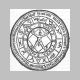 chymische_1
|
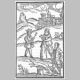 chymische_2
|
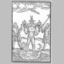 chymische_3
|
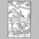 chymische_4
|
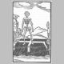 chymische_5
|
| 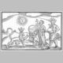 chymische_6
|
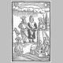 chymische_7
|
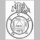 chymische_8
|
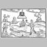 chymische_9
|
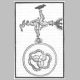 chymische_10
|
| 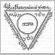 chymische_11
|
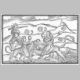 chymische_12
|
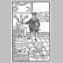 chymische_13
|
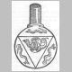 chymische_14
|
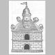 chymische_15
|
| 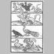 chymische_16
|
chymische_17
|
chymische_18
|
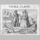 duodecim_1
|
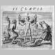 duodecim_2
|
| 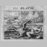 duodecim_3
|
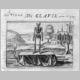 duodecim_4
|
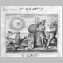 duodecim_5
|
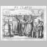 duodecim_6
|
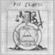 duodecim_7
|
| 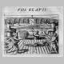 duodecim_8
|
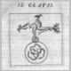 duodecim_9
|
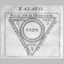 duodecim_10
|
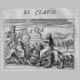 duodecim_11
|
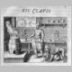 duodecim_12
|
Créé avec IrfanView (version Fr)
Basilius
VALENTINUS. [cf. Douze Clefs pour une bibliographie plus
complète]
- Les douze clefs de la philosophie.
Paris: Pierre Moet 1660
- Les douze clefs de philosophie. Traictant de la vraye medecine metalique. Plus L'azoth, ou le moyen de faire l'Or cacheé des philosophes. Traduction francoise. 8° Paris: chez Pierre Moet 1659
Ferguson Young British Lib. Wisconsin
[Contient:- 2. Basilius Valentinus. Azoth, ou le moyen de faire l'Or caché des Philosophes. Traduction francoise. Reveu corrigé et augmenté par David L'agneau. Et Poeme philosophic sur l'azoth des philosophes. Par le sieur de Nuisement.]
- Offenbahrung der verborgenen Handgriffe auff das Universal gerichtet; item Conclusiones oder Schlußreden aller seiner Schrifften und Tracteten von Schwefel, Vitriol und Magneten,... Darbey mit angefügt Cornelii Drebbel. Tractatus von Natur der Elementen, und wie sie den Wind, Regen, Bliutz und Donner verursachen und worzu sie nützen. 8° Erff[urt]: Johann Birckner 1624 Wolfenbuttel British Lib. Bib.Nat.
- Les douze clefs de philosophie. Traictant de la vraye Medecine Metalique. Plus L'azoth, ou le moyen de faire l'Or caché des philosophes. Traduction francoise.
8° a Paris: Chez Ieremie et Christofle Perier 1624 Ferguson British Lib. Bib.Nat.
- De occulta philosophia. Oder von der heimlichen Wundergeburt der sieben Planeten und Metallen, Fratris Basilii Valentini, Benedicter Ordens, neben einer Taffel der gantzen Philosophischen Weisheit. Jetzo zum andern mal in Druck verfertiget, Durch Johan. Thölden Hessum. 8° [Leipzig]: im verlag Jacob Apels 1611 Young
- De occulta philosophia. Oder von der heimlichen Wundergeburt der sieben Planeten und Metallen... Johan. Thölden...[Leipzig]: im verlag Jacob Apels 1603
- Azoth, sive Avreliae occultae philosophorum, materiam primam, et decantatum illum lapidem philosophorum... explicantes, per Aenigma philosophicum, colloquium parabolicum, Tabulam smaragdinam Hermetis, symbola, parabolas & figuras Saturni, Basilii Vicentini. Georgio Beato interprete. 8° Francofurti: Bringer 1613 Wolfenbuttel
- Chymische Schriften alle, so viel derer verhanden, anitzo zum ersten mahl zusammen gedruckt...8° Hamburg: in verlegung J. Naumans & G. Wolff 1677 Wolfenbuttel British Lib.
- Chymischer Schriftten [anderer Theil].8° n.p. n.d. Ferguson
- Chymische Schriften, aus einigen alten MSten aufs fleissigste verbessert, mit vielen Tractaten, auch etlichen Figuren vermehret, und nebst einem vollständigen Register in drey Theile verfasset; samt einer neuen Vorrede, von Beurtheilung der alchymistischen Schriften und dem Leben des Basilii, begleitet von Bened. Nic. Petraeo, Med. D. Sechste Edition. 8° Leipzig: verlegts Joh. Paul Krauss, Buchhändler in Wien 1769 Ferguson Young
[le volume III contient:-
1. Heinrich Eschenreuters Fünf Kleine Tractätlein.
2. Clavis oder Schlüssel der in vorherhgehenden fünff Tractätlein entahlten Characteren.
3. Handgriffe Basilii Valentini.
4. Basilii Schriften.
5. Jodoci von Rehe Particular und Universal Process.]
- Chymische Schriften aus einigen alten MSten aufs fleissigste verbessert, mit vielen Tractaten, auch etlichen Figuren vermehret, und nebst einem vollständigen Register in Drey Theile verfasset: samt einer neuen Vorrede, von Beurtheilung der Alchymistischen Schriften und dem Leben des Basilii, begleitet von Bened. Nic. Petraeo, Med. D. Fünfte Edition.8° Hamburg: bey Gottfried Richter 1740 Wisconsin
[le volume III contient:-
1. Hein. Eschenreuters Tractätlein.
2. Clavis, oder Schlüssel, der in vorherhgehenden fünff Tractätlein enthalten Characteren.
3. Handgriffe Fr. Basilii Valentini.
4. Von Particular Lunae und Mercurii, Universal-Arbeit.]
- Chymische Schrifften. Anjetzo zum Vierdten mahl zusammen gedruckt, Aufs fleissigste aus einigen alten MS. gecorrigiret, mit vielen in vorigen Editionen ausgelassenen Passagen und Tractaten, auch etlichen Figuren, vermehret. Mit einem generalen vollständigen Register versehen, und in Drey Theile verfasset: Nebst einer neuen Vorrede, worinnen von Lesung und Critique der Alchymistischen Schrifften, ihren Scribenten, neuen Projections-Historien, der Materia Prima Philosophica, dem Leben des Basilii, und was in dieser Edition besonders præstiret worden, einige Nachricht mitgetheilet wird von Bened. Nic. Pietræo, Med. D. 8° Hamburg, In Verlegung Samuel Heyl, Gedruckt mit sel. Georg Königs Schrifften 1717 Ferguson
[Contient:-
1. Neue Vorrede.
2. Folget nun Hrn. Doct. Georg Wolffgang Wedels.
3. Vorrede. Darinnen enthalten die Ursache dieser Edition...
4. Von dem grossen Stein der uhralten Weisen.
5. Wiederholung des grossen Steins der Uhralten.
6. De Microcosmo.
7. De Macrocosmo.
8. De Occulta Philosophia.
9. Von de natürlichen und übernatürlichen Dingen.
10. Triumph-Wagen des Antimonii.
11. Letztes Testament.
12. M. Heinrich Eschenreuters Fünff kleine Tractätlein.
13. List of alchemical symbols.
14. Handgriffe ex Dyade Chym. H. Condes. [i.e. extraits du Dyas Chymica Tripartita de Grasshoff]
15. Particular processes.
16. Indexes.]
- Chymische Schriften...Hamburg: Gottfried Liebezeit 1700
- Les douze clefs de la philosophie.
Paris: Pierre Moet 1660
- Les douze clefs de philosophie. Traictant de la vraye medecine metalique. Plus L'azoth, ou le moyen de faire l'Or cacheé des philosophes. Traduction francoise. 8° Paris: chez Pierre Moet 1659
Ferguson Young British Lib. Wisconsin
[Contient:- 2. Basilius Valentinus. Azoth, ou le moyen de faire l'Or caché des Philosophes. Traduction francoise. Reveu corrigé et augmenté par David L'agneau. Et Poeme philosophic sur l'azoth des philosophes. Par le sieur de Nuisement.]
- Offenbahrung der verborgenen Handgriffe auff das Universal gerichtet; item Conclusiones oder Schlußreden aller seiner Schrifften und Tracteten von Schwefel, Vitriol und Magneten,... Darbey mit angefügt Cornelii Drebbel. Tractatus von Natur der Elementen, und wie sie den Wind, Regen, Bliutz und Donner verursachen und worzu sie nützen. 8° Erff[urt]: Johann Birckner 1624 Wolfenbuttel British Lib. Bib.Nat.
- Les douze clefs de philosophie. Traictant de la vraye Medecine Metalique. Plus L'azoth, ou le moyen de faire l'Or caché des philosophes. Traduction francoise.
8° a Paris: Chez Ieremie et Christofle Perier 1624 Ferguson British Lib. Bib.Nat.
- De occulta philosophia. Oder von der heimlichen Wundergeburt der sieben Planeten und Metallen, Fratris Basilii Valentini, Benedicter Ordens, neben einer Taffel der gantzen Philosophischen Weisheit. Jetzo zum andern mal in Druck verfertiget, Durch Johan. Thölden Hessum. 8° [Leipzig]: im verlag Jacob Apels 1611 Young
- De occulta philosophia. Oder von der heimlichen Wundergeburt der sieben Planeten und Metallen... Johan. Thölden...[Leipzig]: im verlag Jacob Apels 1603
- Azoth, sive Avreliae occultae philosophorum, materiam primam, et decantatum illum lapidem philosophorum... explicantes, per Aenigma philosophicum, colloquium parabolicum, Tabulam smaragdinam Hermetis, symbola, parabolas & figuras Saturni, Basilii Vicentini. Georgio Beato interprete. 8° Francofurti: Bringer 1613 Wolfenbuttel
- Chymische Schriften alle, so viel derer verhanden, anitzo zum ersten mahl zusammen gedruckt...8° Hamburg: in verlegung J. Naumans & G. Wolff 1677 Wolfenbuttel British Lib.
- Chymischer Schriftten [anderer Theil].8° n.p. n.d. Ferguson
- Chymische Schriften, aus einigen alten MSten aufs fleissigste verbessert, mit vielen Tractaten, auch etlichen Figuren vermehret, und nebst einem vollständigen Register in drey Theile verfasset; samt einer neuen Vorrede, von Beurtheilung der alchymistischen Schriften und dem Leben des Basilii, begleitet von Bened. Nic. Petraeo, Med. D. Sechste Edition. 8° Leipzig: verlegts Joh. Paul Krauss, Buchhändler in Wien 1769 Ferguson Young
[le volume III contient:-
1. Heinrich Eschenreuters Fünf Kleine Tractätlein.
2. Clavis oder Schlüssel der in vorherhgehenden fünff Tractätlein entahlten Characteren.
3. Handgriffe Basilii Valentini.
4. Basilii Schriften.
5. Jodoci von Rehe Particular und Universal Process.]
- Chymische Schriften aus einigen alten MSten aufs fleissigste verbessert, mit vielen Tractaten, auch etlichen Figuren vermehret, und nebst einem vollständigen Register in Drey Theile verfasset: samt einer neuen Vorrede, von Beurtheilung der Alchymistischen Schriften und dem Leben des Basilii, begleitet von Bened. Nic. Petraeo, Med. D. Fünfte Edition.8° Hamburg: bey Gottfried Richter 1740 Wisconsin
[le volume III contient:-
1. Hein. Eschenreuters Tractätlein.
2. Clavis, oder Schlüssel, der in vorherhgehenden fünff Tractätlein enthalten Characteren.
3. Handgriffe Fr. Basilii Valentini.
4. Von Particular Lunae und Mercurii, Universal-Arbeit.]
- Chymische Schrifften. Anjetzo zum Vierdten mahl zusammen gedruckt, Aufs fleissigste aus einigen alten MS. gecorrigiret, mit vielen in vorigen Editionen ausgelassenen Passagen und Tractaten, auch etlichen Figuren, vermehret. Mit einem generalen vollständigen Register versehen, und in Drey Theile verfasset: Nebst einer neuen Vorrede, worinnen von Lesung und Critique der Alchymistischen Schrifften, ihren Scribenten, neuen Projections-Historien, der Materia Prima Philosophica, dem Leben des Basilii, und was in dieser Edition besonders præstiret worden, einige Nachricht mitgetheilet wird von Bened. Nic. Pietræo, Med. D. 8° Hamburg, In Verlegung Samuel Heyl, Gedruckt mit sel. Georg Königs Schrifften 1717 Ferguson
[Contient:-
1. Neue Vorrede.
2. Folget nun Hrn. Doct. Georg Wolffgang Wedels.
3. Vorrede. Darinnen enthalten die Ursache dieser Edition...
4. Von dem grossen Stein der uhralten Weisen.
5. Wiederholung des grossen Steins der Uhralten.
6. De Microcosmo.
7. De Macrocosmo.
8. De Occulta Philosophia.
9. Von de natürlichen und übernatürlichen Dingen.
10. Triumph-Wagen des Antimonii.
11. Letztes Testament.
12. M. Heinrich Eschenreuters Fünff kleine Tractätlein.
13. List of alchemical symbols.
14. Handgriffe ex Dyade Chym. H. Condes. [i.e. extraits du Dyas Chymica Tripartita de Grasshoff]
15. Particular processes.
16. Indexes.]
- Chymische Schriften...Hamburg: Gottfried Liebezeit 1700